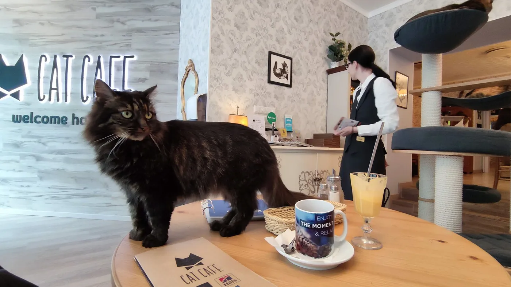
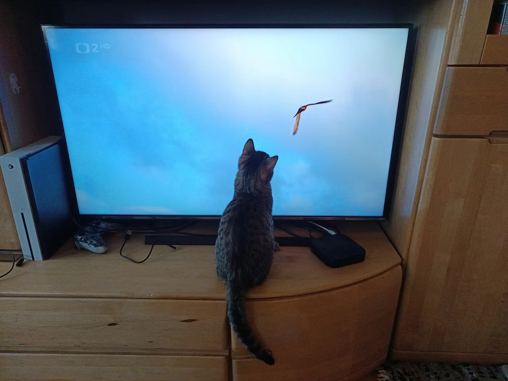
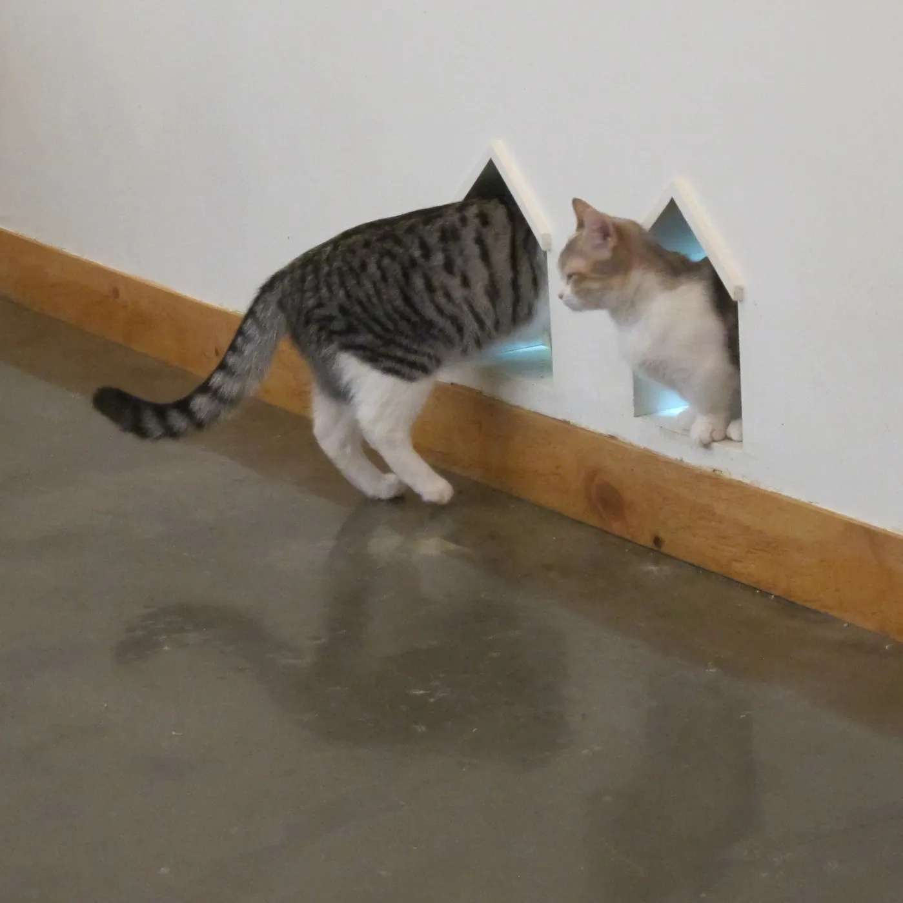
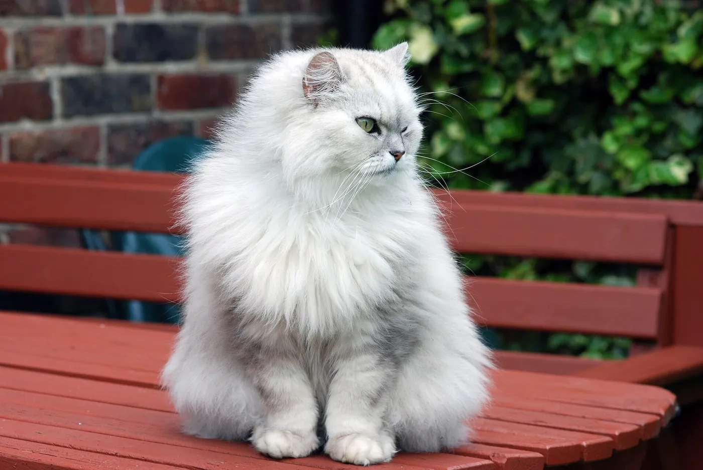
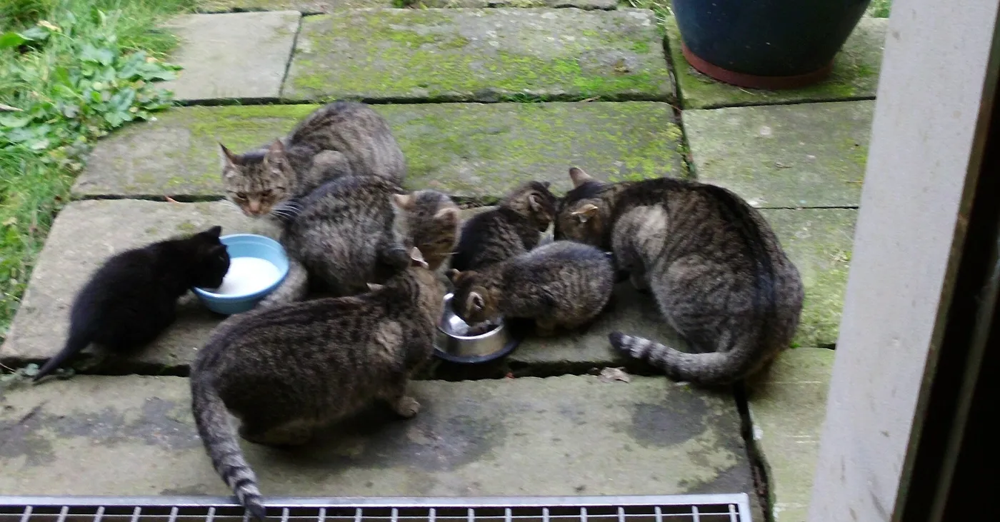
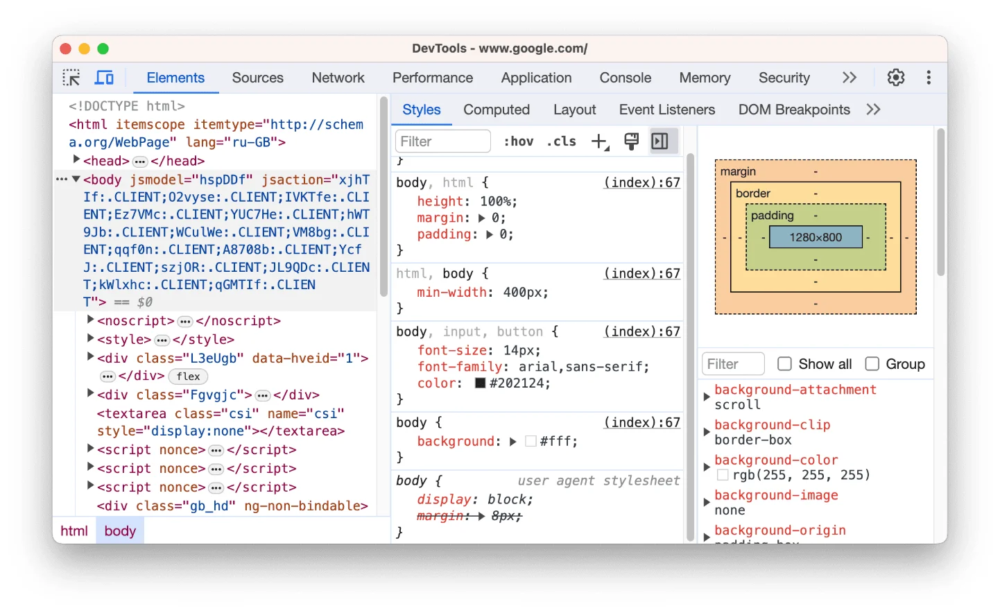
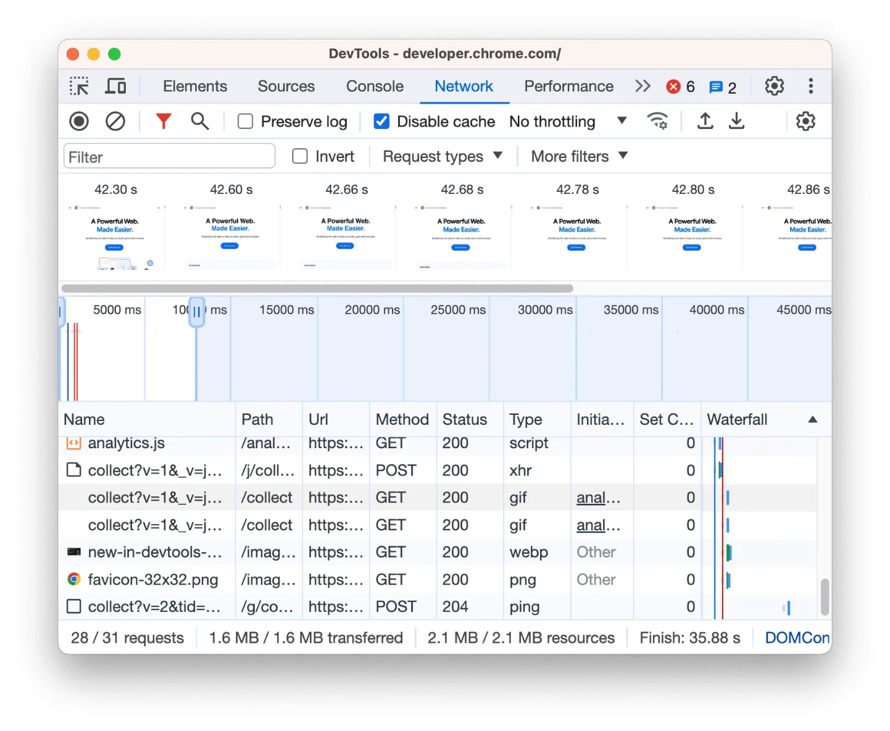
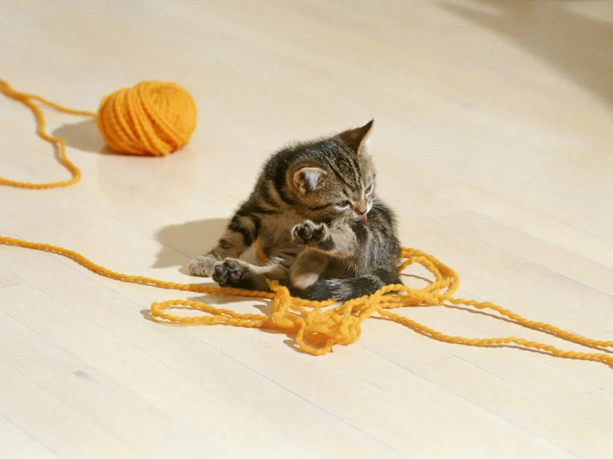

Модуль 0. Старт. Урок 1
Клиент, сервер, фронтенд, бэкенд и архитектуры
Фронтенд с нуля
Часть 1
Путь от адреса в браузере до страницы на экране
Веб-приложение устроено как ресторан

Пользователь видит только фронтенд. Всё остальное — за экраном

https://shop.ru185.12.3.4GET / HTTP/1.1200 OK + HTMLstyle.css, app.js, logo.pngGET /catalog HTTP/1.1
Host: shop.ruHTTP/1.1 200 OK
Content-Type: text/html
<!doctype html>…| Метод | Что делает |
|---|---|
GET |
получить |
POST |
создать |
PUT, PATCH |
изменить |
DELETE |
удалить |
| Код | Значит |
|---|---|
2xx |
всё получилось |
3xx |
ищите в другом месте |
4xx |
ошибка в запросе |
5xx |
ошибка на сервере |
Часть 2
Как части приложения связаны между собой
api.shop.ru
Клиенту нельзя доверять. Всё, что в браузере, пользователь может изменить
Фронтенд не лезет в базу сам. Он стучится в API по правилам:

GET /tasks200 и JSON[{ "id": 1, "title": "Купить молоко", "done": false }]

Для фронтенда разницы нет: бэкенд — это набор адресов API
Часть 3
Что делает фронтенд-разработчик и с кем работает
HTML — структура
<button>Купить</button>CSS — внешний вид
button { background: purple; }JS — поведение
button.onclick = () => alert('Готово');| Роль | Результат работы |
|---|---|
| Фронтенд | Работающие экраны |
| Бэкенд | API и база данных |
| Дизайнер | Макеты в Figma |
| Аналитик | Требования |
| QA | Отчёты о багах |
| DevOps | Стабильные серверы и выкладка |
| Менеджер | Приоритеты |
| Движок | Браузеры |
|---|---|
| Chromium | Chrome, Edge, Opera, Яндекс Браузер |
| WebKit | Safari — и все браузеры на iPhone |
| Gecko | Firefox |
Разрабатываем в Chrome, проверяем ещё и в Safari


Часть 4
Что вы соберёте и как будем учиться
/tasks| Уровень | Опыт | Как работает |
|---|---|---|
| Junior | до 1–2 лет | понятные задачи, учится на ревью |
| Middle | 2–4 года | фича целиком сам |
| Senior | от 4–5 лет | устройство системы и качество |
После курса — junior
Застряли больше чем на 30 минут — пишите ментору
Что делаю, что ожидаю, что получаю, что пробовал
